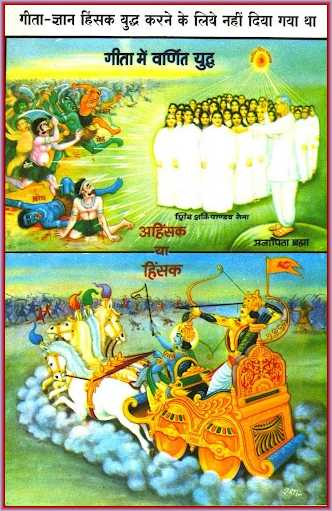
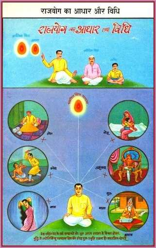
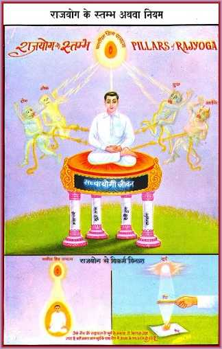

The Rosary of 108 Beads and Yoga
  
On the sixth day, the course explores the significance of the rosary of 108 beads and introduces the practice of yoga. The rosary is a symbolic representation of the 108 divine qualities that souls can acquire on their spiritual journey. Each bead represents a different divine quality, and by counting the beads, souls can reflect on these qualities and strive to embody them.
The lesson explains that the practice of yoga is a means to attain spiritual union with the Supreme Soul. Yoga involves stabilizing the mind in the remembrance of the Supreme Soul and practicing divine virtues in daily life. It is through yoga that souls can attain purity, peace, and power, and become instruments of God's work.
The day also emphasizes the importance of spiritual discipline, including chastity, righteous food, and daily study of divine knowledge. These practices are essential for spiritual growth and help souls maintain a pure and virtuous life.
The lesson concludes with an introduction to the concept of Raja Yoga, a form of yoga that focuses on the attainment of deity-sovereignty in Heaven. By practicing Raja Yoga, souls can become masters of their minds and actions, and achieve the highest spiritual status.